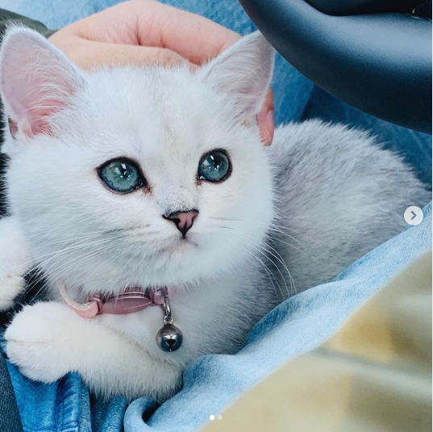
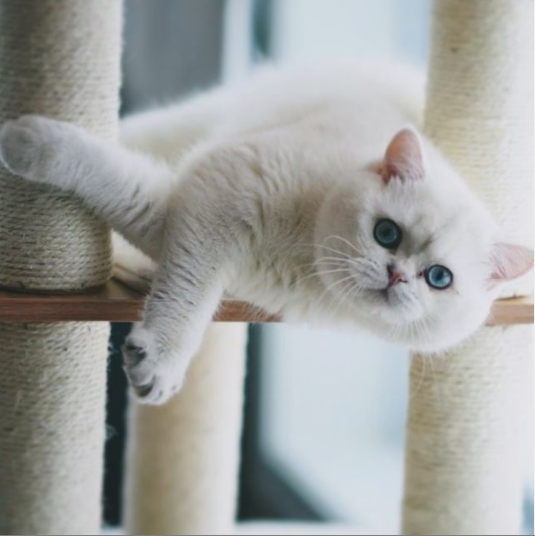

Part 1

This was sometime after I had lost my dog from the Parvo virus. He had been my companion for almost a decade and I was in agony of losing a member of my family. At that time, I was in-need of another pet to fill the void in my heart.
But I coudln't risk losing another puppy from the virus so I decided that I was going to become a cat mom for the first time. In anticipation, I adopted a small silver British shorthair girl from a cattery in Florida.
When I saw her for the first time at the Lansing Airport, I immediately fell in love with her silky white fur, her red nose like a cherry, and her turquoise eyes deep like an emerald ocean.
She was small and fluffy like a snow angel. I named her Cherry after her small red nose. As days passed, I grew more and more fond towards her and I couldn't resist but to adopt another silver British shorthair kitten.
This time, it was a silver boy from Russia and I named him Blueberry--Berry for short--after his deep blue eyes. I wanted to share Cherry and Berry's cuteness with the world.
So I created an Instagram page for them and began sharing their photos and videos.
Published: 06/04/21
Author: Sarah Song
Part 2

It was 6 a.m on an early Summer morning when Cherry went into labor. I was both anxious but excited as this was the first litter from Cherry and Berry and also the first time I ever witnessed the miracle of birth.
After about an hour of tough labor, Cherry became a mother of two healthy boys. They were so precious and delicate like itty-bitty beans. To this day, I cherish the moment that I felt their warmth and soft heartbeat in my hands.
For the next couple momths, Cherry and I took care of them with love and affection. When the time came for them to become independent, I had to look for a new loving home for them as I already had two more dogs at this time
(I was able to adopt two shih-tzus after a year of wait since the incident) because I couldn't afford to take care of any more pets.
So I went online and tried to find a loving new home for the two little beans and I was lucky enough to have a family adopt both of them. When families contact me after they adopt the kittens, telling me how grateful they were and how much they loved them,
I feel joyous and fulfilled. I feel content that I can take a part in completing families one by one with my lovely kittens and that is why I continue to breed British kittens today.
Published: 06/05/21
Author: Sarah Song